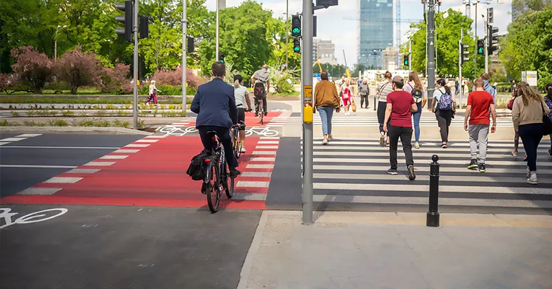

Poprawa krajobrazu biznesowego Polski: nauka na sukcesie Azji
ADVERTORIAL ARTICLE

Azja, będąca domem dla niektórych z najszybciej
rozwijających się gospodarek świata, od dawna jest uważana
za centrum innowacji, efektywności i postępu gospodarczego.
Polska, z bogatą historią i dynamicznym środowiskiem
biznesowym, stoi na progu. Może przyspieszyć swój postęp
gospodarczy, przyjmując niektóre z najlepszych praktyk Azji.
W tym artykule przyjrzymy się kilku kluczowym strategiom,
które Polska może naśladować, aby pobudzić wzrost i
zwiększyć konkurencyjność w biznesie.
1. Przyjmij transformację cyfrową: Gospodarki azjatyckie, zwłaszcza Korea Południowa, Singapur i Chiny, gorąco przyjęły erę cyfrową. Ich rządy i przedsiębiorstwa nieustannie dążyły do rozwoju infrastruktury cyfrowej, e-administracji, e-handlu i bankowości mobilnej. Zintensyfikowanie skupienia na transformacji cyfrowej może przyciągnąć do Polski nową falę przedsiębiorców i inwestorów zorientowanych na technologię.
2. Priorytet dla edukacji i szkolenia: Tygrysy Azjatyckie (Korea Południowa, Singapur, Tajwan i Hongkong) przypisują wiele swojego sukcesu inwestycjom w edukację. Te kraje nie tylko podkreślały podstawową edukację, ale także zapewniały, że ich programy nauczania były zsynchronizowane z wymaganiami przemysłu. Polska może wzmacniać swój kapitał ludzki, kładąc nacisk na edukację STEM oraz nawiązując więcej partnerstw między uniwersytetami a przemysłem.
3. Uprość biurokrację i regulacje: Kraje takie jak Singapur są znane z efektywnych i przejrzystych ram regulacyjnych. Zmniejszenie biurokracji nie tylko ułatwia działalność krajowym przedsiębiorstwom, ale także przyciąga inwestorów zagranicznych. Uproszczenie procedur, ograniczenie papierkowej roboty i zapewnienie przejrzystości może znacząco podnieść globalne miejsce Polski w rankingu biznesowym.
4. Promuj innowacje i B+R: Ewolucja technologiczna Japonii ma swoje źródło w dedykowanych inicjatywach B+R. Dla Polski kluczowe może być tworzenie środowiska, w którym firmy mogą łatwo uzyskać fundusze na B+R, a innowacje są nagradzane. Specjalne strefy innowacji lub ulgi podatkowe dla firm zorientowanych na B+R mogą być krokami w dobrym kierunku.
5. Rozwój infrastruktury: Solidna infrastruktura to znak rozpoznawczy wielu gospodarek azjatyckich. Efektywne drogi, porty, koleje i lotniska ułatwiają handel. Polska może czerpać z doświadczeń Chin, gdzie rozwój infrastruktury był kluczowym elementem ich sukcesu gospodarczego. Zwiększając inwestycje w nowoczesne projekty infrastrukturalne, Polska może znacząco obniżyć koszty działania przedsiębiorstw i poprawić łączność.
6. Przyjmuj zielone i zrównoważone praktyki biznesowe: Dążenie Azji do zielonej energii, zwłaszcza w krajach takich jak Chiny i Indie, podkreśla zaangażowanie regionu w zrównoważony rozwój. W miarę jak europejskie rynki coraz bardziej skłaniają się ku zrównoważeniu, Polska może to wykorzystać, promując zielone technologie i zrównoważone praktyki biznesowe. Nie tylko pomaga to w walce z zmianami klimatu, ale także otwiera drzwi do nowych, ekologicznie świadomych rynków.
7. Pielęgnuj regionalne i międzynarodowe partnerstwa: Partnerstwa handlowe, zarówno regionalne, jak i globalne, były kluczem do sukcesu wielu gospodarek azjatyckich. Blok ASEAN (Stowarzyszenie Narodów Azji Południowo-Wschodniej) na przykład sprzyja współpracy gospodarczej między jego członkami. Polska, wykorzystując swoją pozycję w Unii Europejskiej, może dalej pielęgnować dwustronne partnerstwa handlowe z dynamicznymi gospodarkami azjatyckimi, diversyfikując swoje rynki i źródła.
8. Wzmocnij ekosystem startupów: Miasta takie jak Bangalore, Shenzhen i Singapur są globalnymi hubami startupowymi. Ich sukces wynika z połączenia polityki rządowej, dostępu do kapitału i mentoringu. Polska może wzmacniać swój ekosystem startupów poprzez oferowanie zachęt, ułatwienie dostępu do kapitału ryzyka i promowanie programów mentoringowych.
Podsumowując:
Podróż Polski w kierunku stania się znaczącym europejskim centrum biznesowym jest pełna potencjału. Czerpiąc nauki z azjatyckich cudów gospodarczych, kraj może wyznaczyć kurs, który nie tylko jest pomyślny
1. Przyjmij transformację cyfrową: Gospodarki azjatyckie, zwłaszcza Korea Południowa, Singapur i Chiny, gorąco przyjęły erę cyfrową. Ich rządy i przedsiębiorstwa nieustannie dążyły do rozwoju infrastruktury cyfrowej, e-administracji, e-handlu i bankowości mobilnej. Zintensyfikowanie skupienia na transformacji cyfrowej może przyciągnąć do Polski nową falę przedsiębiorców i inwestorów zorientowanych na technologię.
2. Priorytet dla edukacji i szkolenia: Tygrysy Azjatyckie (Korea Południowa, Singapur, Tajwan i Hongkong) przypisują wiele swojego sukcesu inwestycjom w edukację. Te kraje nie tylko podkreślały podstawową edukację, ale także zapewniały, że ich programy nauczania były zsynchronizowane z wymaganiami przemysłu. Polska może wzmacniać swój kapitał ludzki, kładąc nacisk na edukację STEM oraz nawiązując więcej partnerstw między uniwersytetami a przemysłem.
3. Uprość biurokrację i regulacje: Kraje takie jak Singapur są znane z efektywnych i przejrzystych ram regulacyjnych. Zmniejszenie biurokracji nie tylko ułatwia działalność krajowym przedsiębiorstwom, ale także przyciąga inwestorów zagranicznych. Uproszczenie procedur, ograniczenie papierkowej roboty i zapewnienie przejrzystości może znacząco podnieść globalne miejsce Polski w rankingu biznesowym.
4. Promuj innowacje i B+R: Ewolucja technologiczna Japonii ma swoje źródło w dedykowanych inicjatywach B+R. Dla Polski kluczowe może być tworzenie środowiska, w którym firmy mogą łatwo uzyskać fundusze na B+R, a innowacje są nagradzane. Specjalne strefy innowacji lub ulgi podatkowe dla firm zorientowanych na B+R mogą być krokami w dobrym kierunku.
5. Rozwój infrastruktury: Solidna infrastruktura to znak rozpoznawczy wielu gospodarek azjatyckich. Efektywne drogi, porty, koleje i lotniska ułatwiają handel. Polska może czerpać z doświadczeń Chin, gdzie rozwój infrastruktury był kluczowym elementem ich sukcesu gospodarczego. Zwiększając inwestycje w nowoczesne projekty infrastrukturalne, Polska może znacząco obniżyć koszty działania przedsiębiorstw i poprawić łączność.
6. Przyjmuj zielone i zrównoważone praktyki biznesowe: Dążenie Azji do zielonej energii, zwłaszcza w krajach takich jak Chiny i Indie, podkreśla zaangażowanie regionu w zrównoważony rozwój. W miarę jak europejskie rynki coraz bardziej skłaniają się ku zrównoważeniu, Polska może to wykorzystać, promując zielone technologie i zrównoważone praktyki biznesowe. Nie tylko pomaga to w walce z zmianami klimatu, ale także otwiera drzwi do nowych, ekologicznie świadomych rynków.
7. Pielęgnuj regionalne i międzynarodowe partnerstwa: Partnerstwa handlowe, zarówno regionalne, jak i globalne, były kluczem do sukcesu wielu gospodarek azjatyckich. Blok ASEAN (Stowarzyszenie Narodów Azji Południowo-Wschodniej) na przykład sprzyja współpracy gospodarczej między jego członkami. Polska, wykorzystując swoją pozycję w Unii Europejskiej, może dalej pielęgnować dwustronne partnerstwa handlowe z dynamicznymi gospodarkami azjatyckimi, diversyfikując swoje rynki i źródła.
8. Wzmocnij ekosystem startupów: Miasta takie jak Bangalore, Shenzhen i Singapur są globalnymi hubami startupowymi. Ich sukces wynika z połączenia polityki rządowej, dostępu do kapitału i mentoringu. Polska może wzmacniać swój ekosystem startupów poprzez oferowanie zachęt, ułatwienie dostępu do kapitału ryzyka i promowanie programów mentoringowych.
Podsumowując:
Podróż Polski w kierunku stania się znaczącym europejskim centrum biznesowym jest pełna potencjału. Czerpiąc nauki z azjatyckich cudów gospodarczych, kraj może wyznaczyć kurs, który nie tylko jest pomyślny